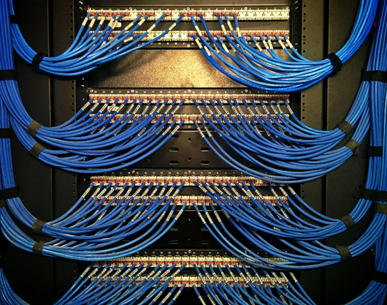
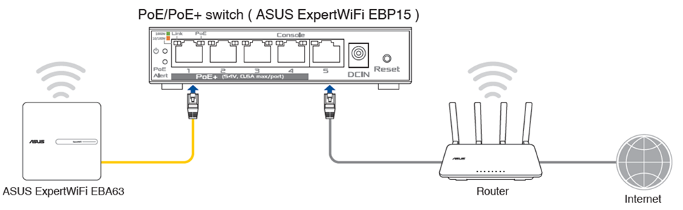
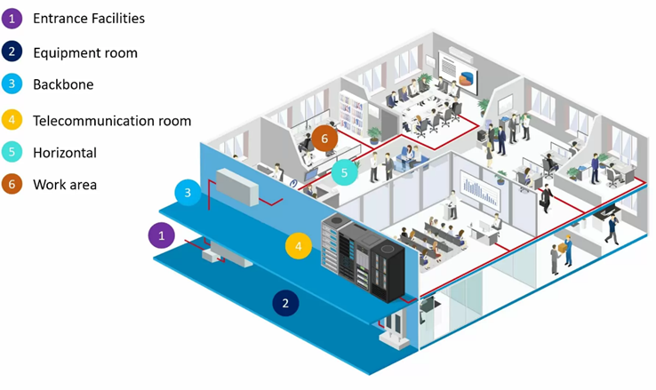

Cableado Estructurado
El cableado estructurado es un sistema de infraestructura para telecomunicaciones que sigue estándares establecidos por organizaciones como la TIA/EIA y ISO/IEC, con el objetivo de soportar las necesidades actuales y futuras de transmisión de datos, voz y video en entornos empresariales o industriales. Este tipo de cableado proporciona una solución organizada, escalable y flexible, permitiendo a las organizaciones adaptarse a las demandas tecnológicas y de red con facilidad.
Normas del Cableado Estructurado:
- Las normas de cableado estructurado son fundamentales para garantizar la interoperabilidad y rendimiento. Entre las más importantes se encuentran:
- TIA/EIA-568: Define los estándares para el cableado en edificios comerciales.
- ISO/IEC 11801: Establece requisitos para el cableado en aplicaciones de telecomunicaciones.
- ANSI/TIA-942: Se utiliza principalmente en centros de datos.
- IEEE 802.11: Se utiliza en la mayoría de las redes domésticas y de oficina para permitir que las computadoras portátiles, impresoras, teléfonos inteligentes y otros dispositivos.

Categorías de Cables
Los cables de red se clasifican en categorías según su capacidad de transmisión:
- CAT1 (No reconocido por la EIA/TIA): se utiliza normalmente para el cable telefónico. Este tipo de cable no soporta el tráfico de redes informáticas y no está trenzado. El CAT1 también lo utilizan las empresas de telecomunicaciones que prestan servicios RDSI y RTC. En estos casos, el cableado entre la sede del cliente y la red de la empresa de telecomunicaciones se realiza con cable de tipo CAT1.
- CAT2 (No reconocido por la EIA/TIA): permite la transmisión de datos a velocidades de hasta 4 Mbps (megabits por segundo).
- CAT3 (No reconocido por la EIA/TIA): permite la transmisión de datos a velocidades de hasta 16 Mbps (megabits por segundo), este tipo de cables se utilizó ampliamente a principios de los 90 para Ethernet 10BASE-T y, debido a que el cableado puede durar hasta 20 años, es factible encontrar redes en buen estado. En general, se considera obsoleto para las redes de datos.
- CAT4 (No reconocido por la EIA/TIA): Proporcionan 20 MHz de ancho de banda para velocidades de hasta 16 Mbps. Se desarrolló inicialmente para redes Token Ring, 10Base-T y 100Base-4. En un principio, la ANSI/EIA/TIA 568 especificaba que el Cat 4 tenía una capacidad de 20 MHz, mientras que el ISO/IEC 11801 especificaba hasta 100 MHz. Actualmente, los cables Cat 4 ya no se utilizan y no son compatibles con los estándares actuales de cableado de datos.
- CAT5 (No reconocido por la EIA/TIA): es un cable multipar de alto rendimiento formado por conductores de par trenzado, utilizado principalmente para la transmisión de datos. El cable CAT5 básico se diseñó para características de hasta 100 MHz y soportaba redes de 10 ó 100 Mbps. El cable CAT5 fue sustituido posteriormente por la especificación CAT5e, que soporta velocidades de hasta 1 Gbps.
- CAT5e: es la especificación de cableado más utilizada en todo el mundo y, a diferencia de los cables de categoría que le siguen, es muy indulgente cuando no se cumplen las directrices de terminación y despliegue del cable. Con el fin de soportar velocidades de hasta 1 Gbps, CAT5e incluye dos torsiones por pulgada (TPI) en el diseño del cable, lo que proporciona una especificación de diafonía mejorada.
- CAT6: se está implantando actualmente en hogares y empresas de todo el mundo y ofrece mejoras significativas con respecto a las generaciones anteriores de cables de red. La principal mejora del cable CAT6 con respecto al CAT5e es su capacidad para soportar Gigabit Ethernet en longitudes de hasta 100 metros. Esto permite tender un solo cable en lugar de varios para cada piso. Las especificaciones mejoradas también permiten mayores requisitos de ancho de banda.
- CAT6A: es un cable Ethernet de alta velocidad que admite velocidades de transferencia de datos de hasta 10 Gbps con un ancho de banda máximo de 500 MHz. Tiene torsiones adicionales y más apretadas, con aislamiento adicional para reducir la diafonía. CAT6A es retrocompatible con CAT6 y CAT5E.
- CAT7 y CAT7A (No reconocido por la EIA/TIA): Se define y especifica en la norma ISO/IEC 11801:2002, Clase F. El cable Cat 7 es compatible con los estándares y equipos de cableado Cat 6, Cat 5 y Cat 5/e. Puede proporcionar una velocidad de ancho de banda de 600 MHz y 100 MHz respectivamente. Este tipo de cableado utiliza un conector TERA, el cual fue desarrollado por Siemon Company. Este conector NO es compatible con el RJ45, sin embargo, una alternativa compatible con el RJ45 es el conector GG45, el cual cuenta con la versión ARJ45 HS que es compatible con CAT 6.
¿Qué es un PoE y cómo funciona?
Power over Ethernet (PoE) permite que sus cables de red lleven alimentación eléctrica a cualquier dispositivo en una red sin necesidad de utilizar una toma de corriente externa. Permite a un cable de alimentación eléctrica, así como conectar un dispositivo a su red.
La forma de funcionamiento es sencilla. Un cable Ethernet que cumple con los estándares CAT5e (o superior) consta de cuatro pares trenzados y PoE envía la alimentación a través de estos pares a los dispositivos preparados para PoE. Con un método se utilizan dos pares de hilos para transmitir datos y los dos pares restantes se utilizan para la alimentación eléctrica. Con otro método, los datos y la alimentación se envían por el mismo par.

Componentes del Cableado Estructurado
-
Cableado Horizontal:
Es el sistema que conecta el área de trabajo con el armario de telecomunicaciones más cercano. Generalmente, se utilizan cables de par trenzado (como UTP o FTP) y va desde el panel de parcheo hasta las tomas de red.
-
Cableado Vertical (Backbone):
Este tipo de cableado interconecta los diferentes armarios de telecomunicaciones y conecta los equipos de red principales con los secundarios a través de cables de mayor capacidad (fibra óptica o cobre de gran diámetro). El backbone permite la conexión entre pisos o edificios.
-
Armarios de Telecomunicaciones (TR):
También conocidos como cuartos de telecomunicaciones, son espacios físicos donde se ubican los equipos de red como switches, routers, servidores y paneles de parcheo. Cada piso o zona de un edificio tiene al menos uno de estos armarios.
-
Panel de Parcheo (Patch Panel):
Este es un dispositivo clave para organizar y gestionar el cableado de red. En él se conectan los cables que provienen de las áreas de trabajo y se organizan para su conexión con los switches u otros equipos de red.
-
Área de Trabajo:
El área de trabajo es el lugar donde los usuarios finales interactúan con el sistema de cableado estructurado, generalmente a través de tomas de red Ethernet. Estas tomas se conectan directamente al cableado horizontal.
-
Cables de Parcheo (Patch Cords):
Son cables cortos que conectan los equipos de red (como switches o routers) con el panel de parcheo o con las estaciones de trabajo.
